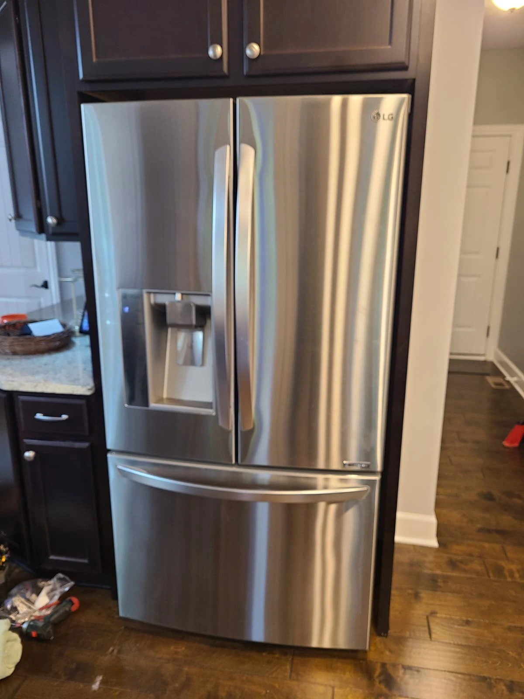
Two Concerns on One LG Refrigerator Service Visit
This LG refrigerator repair in McCordsville, Indiana involved two distinct problems. The homeowner reported heavy ice behind and underneath the ice bin inside the door-mounted ice-maker compartment. The light beneath the right refrigerator door also stayed off when the freezer was opened.
The water-side repair involved a leaking valve and replacement of the ice maker. The lighting repair involved both a new LED light and damaged wiring at the upper right door hinge. Treating these as separate concerns kept the diagnosis focused on the parts and connections involved in each symptom.

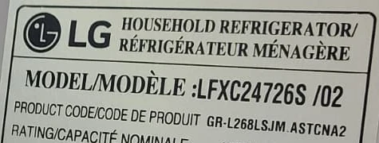
Model Confirmed: LG LFXC24726S/02
The original appliance label identifies this refrigerator as LG LFXC24726S/02. The model-number area is shown here from the service photograph.
This repair record covers the refrigerator photographed at the McCordsville home. Its in-door ice maker, water valve, underside door light and hinge wiring are documented below.
Ice Behind and Under the In-Door Ice Bin
The reported buildup was not simply loose ice inside the storage bin. Ice had accumulated behind the bin and beneath it, against the compartment wall. Removing the assembly exposed additional ice around the rear connector area and on the back of the assembly.

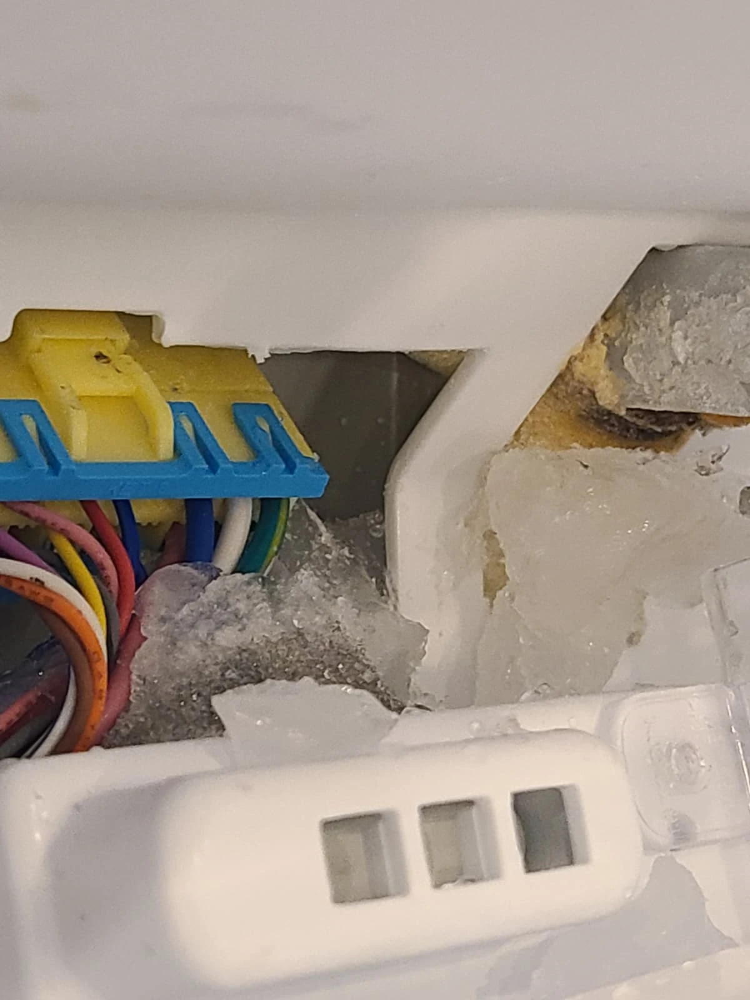

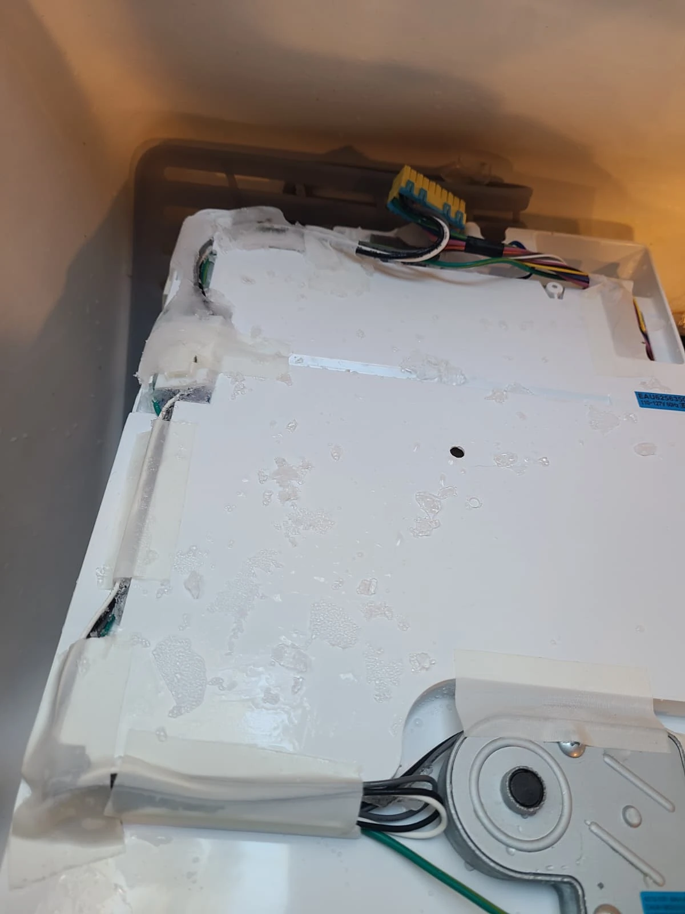
On this refrigerator, the diagnosed source of the leak was a water valve that was not sealing closed. The valve allowed unwanted water flow instead of stopping it as intended. The repair addressed that source rather than only removing the visible ice.

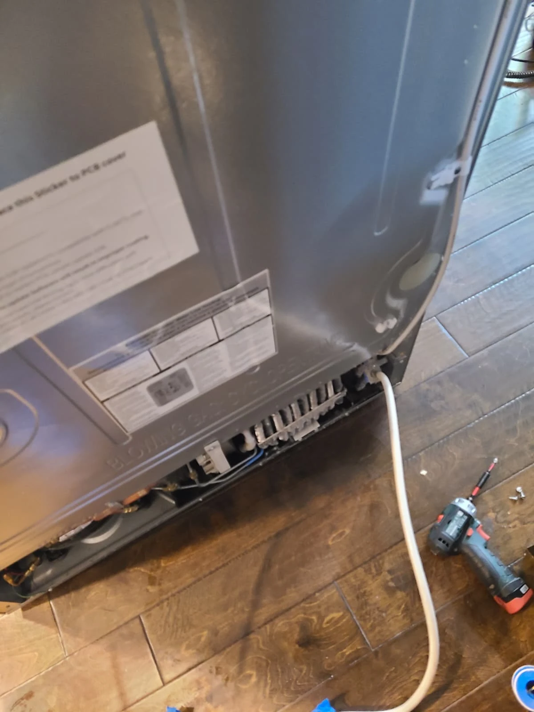
Accessing the Water Valve
The water valve was reached at the rear of the refrigerator. The photograph shows the service access area and water connection during the job.
The confirmed finding for this visit was a valve that did not hold water back properly. Ice accumulation alone does not establish the same diagnosis on every refrigerator; a similar symptom still needs inspection of the appliance involved.

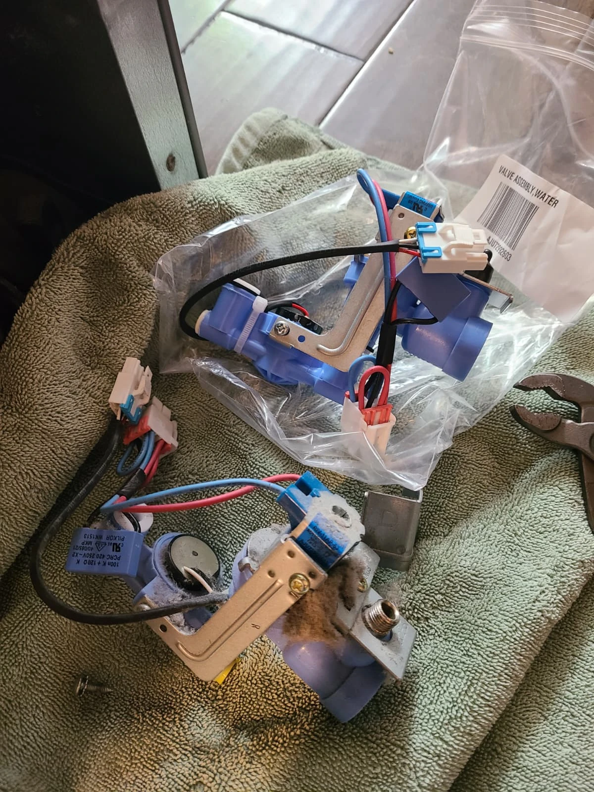
Replacing the Leaking Water Valve
We replaced the water valve with a new assembly. The removed and replacement valves are shown together in the service photograph.
Replacing the ice maker alone would not address a separately identified valve leak. Both the water valve and the ice maker were replaced during this service visit.
Removing the Ice-Maker Assembly
The door compartment was opened and the ice-maker assembly removed for service. These photographs show the exposed compartment and the assembly during replacement, providing a closer view of the area hidden behind the ice bin.

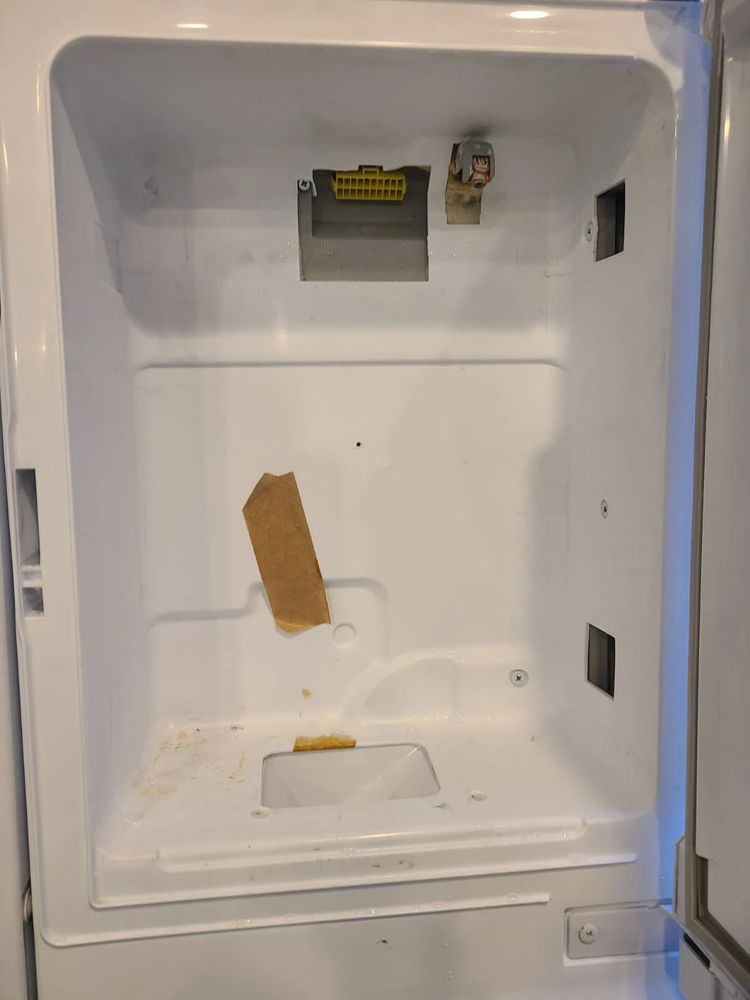

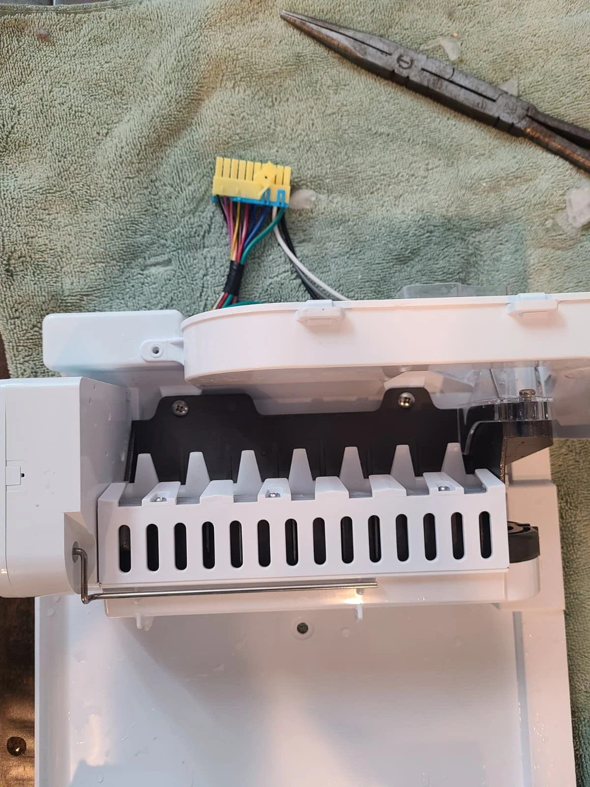

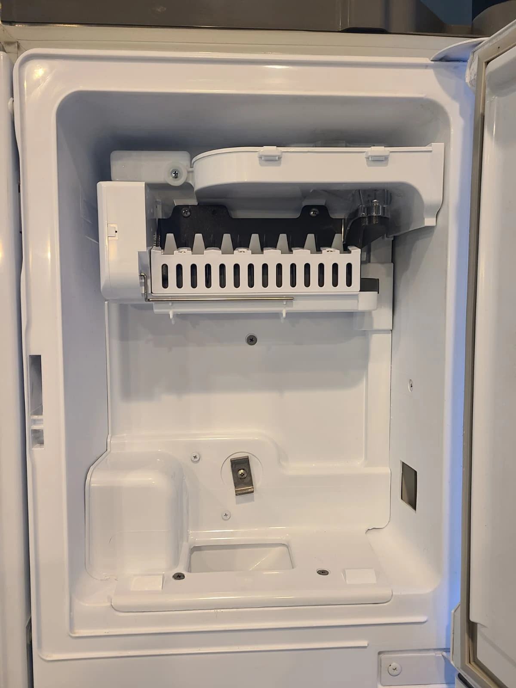
Installing the Replacement Ice Maker
A new ice maker was installed in the refrigerator door. The photograph shows the replacement in position with the storage bin removed.
This completed the component replacements for the ice-compartment portion of the job: the leaking water valve and the ice maker. The separate lighting concern required attention on the right-hand door.

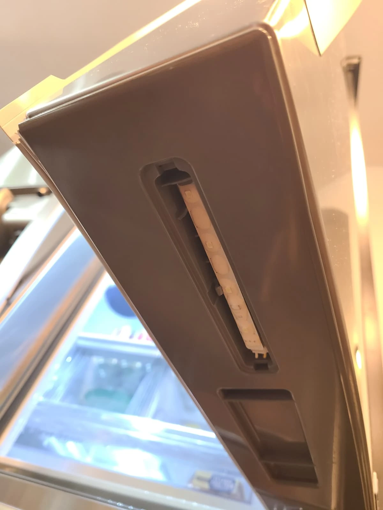
The Light Under the Right Door Would Not Turn On
The second complaint concerned the light located underneath the right refrigerator door. It did not illuminate when the freezer was opened. The photograph shows the unlit LED with its clear cover removed.
We replaced this LED light. However, the lighting problem also involved damaged wiring at the top of the same right-hand door, so the work did not stop at replacing the lamp.
Replacing the LED Light
The original LED was removed from the underside of the door and replaced. The photographs show the removed light and the replacement prepared for installation.

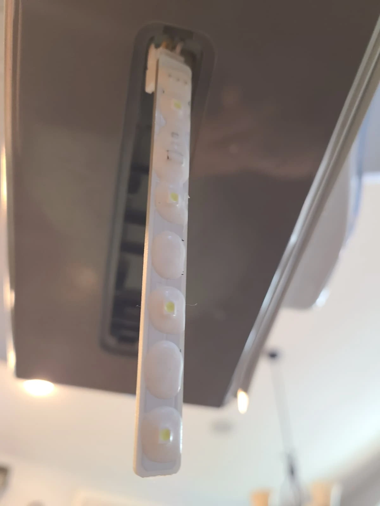

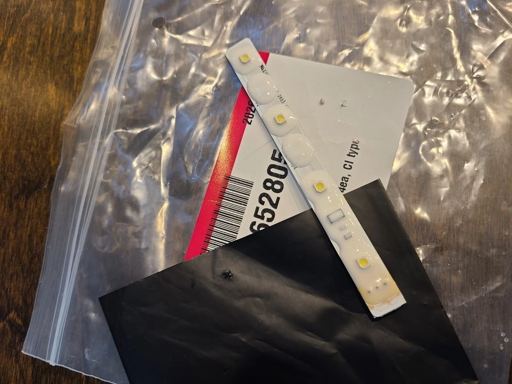

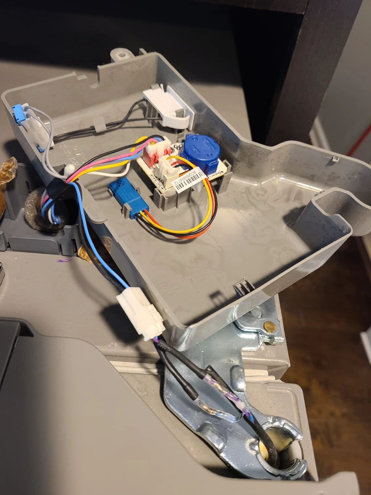
Repairing Broken Wiring at the Upper Right Hinge
Chafed wiring and an open wire connection were found at the upper right door hinge. We repaired the damaged wires as part of the lighting repair.
The photograph documents the wiring work with the hinge cover open. It shows the repair in progress, not a finished view with the cover reinstalled. This was an additional electrical repair alongside the LED replacement.
Work Completed During This Visit
- Replaced the water valve that was not sealing closed.
- Replaced the in-door ice maker.
- Replaced the LED light under the right refrigerator door.
- Repaired chafed and broken wiring at the upper right door hinge.
The service addressed both the ice-compartment leak and the components involved in the lighting complaint. The original photographs document the affected areas, replacement parts and wiring work.
Questions About This LG Refrigerator Repair
What caused ice to build up behind the bin?
For this LFXC24726S/02, the technician identified a water valve that was not sealing closed and was allowing leakage. The valve was replaced.
Was only the ice maker replaced?
No. The water valve and ice maker were both replaced. The visit also included an LED light replacement and right-hinge wiring repair.
Why did the light repair involve the door hinge?
In addition to the light itself, chafed and broken wires were found at the upper right hinge. Those wires needed repair as part of addressing the lighting complaint.
Does the same ice buildup always mean a bad valve?
This article records the diagnosis on one refrigerator. Similar-looking ice buildup on another appliance needs its own inspection before a valve or ice maker is recommended.
LG Refrigerator Repair in McCordsville, Indiana
For ice buildup around an in-door ice maker, a water leak or a refrigerator lighting problem, contact Alex Appliance Repair for refrigerator repair in McCordsville. Share the full model number and describe where the ice or water appears, or which light is not working.
See our refrigerator repair services, McCordsville service coverage and more repair stories with original photographs.
Alex Appliance Repair is an independent appliance repair service operated by Aksenov LLC. Call (463) 248-8429 to discuss your refrigerator.
Book refrigerator repair in McCordsville